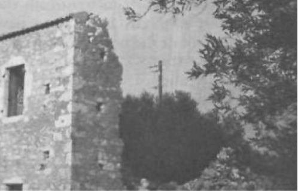
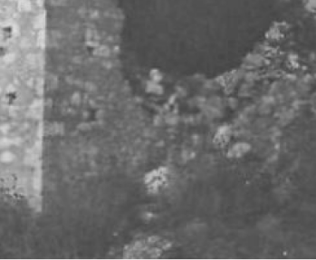
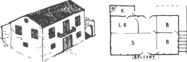
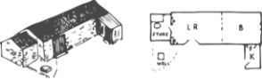
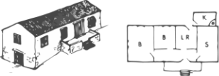
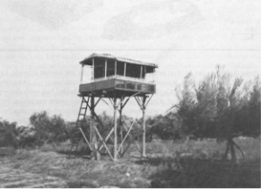
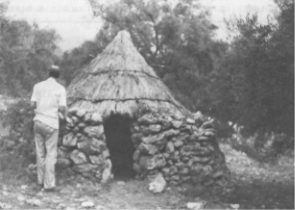
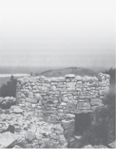
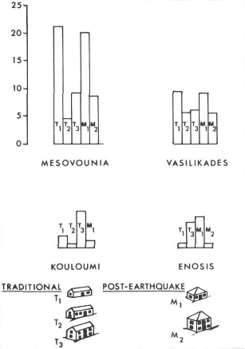

Κατά τον 18ο και 19ο αιώνα, οι βελτιώσεις δρόμων, υδραγωγείων και ακαδημαϊκών ιδρυμάτων έφεραν μια γενική αίσθηση επέκτασης και καλύτερης συνολικής ευημερίας στο νησί. Ωστόσο, με την έναρξη των αρκετών σεισμών το 1953, το μέλλον συνεπαγόταν σημαντική αγροτική μετανάστευση που οδήγησε στην αποδόμηση και την απόρριψη ενός ήδη εύθραυστου τρόπου ζωής και παραδόσεων. Οι αγροτικές πόλεις έμειναν νεκρές και ερειπωμένες καθώς οι κοινότητες ενθαρρύνθηκαν να εγκατασταθούν κοντά στην ακτή και να εμπλακούν σε επιχειρήσεις κοντά και στη θάλασσα.
During the 18th and 19th century, improvements of roads, aqueducts, and academic institutions brought on a general sense of expansion and better overall well-being to the island. However, with the onset of the several earthquakes in 1953, the future entailed sizable rural emigration which led to the deconstruction and rejection of an already fragile way of living and traditions. Rural towns were left dead and ruined as the communities were encouraged to resettle near the coast and engage in business near and on the sea.
“Θα ήθελα να είχαν επιζήσει τα σπίτια και οι αυλές τους, τα πηγάδια και τα καλντερίμια.”
“I would have liked the houses and their yards, the wells and the cobble streets to have survived.”
-- Ευρώπη Μοσχονά Καρκαβέλα Μαραγκάκη -- Evropi Moschona Karkavela Maragaki
“Μαζευτήκαμε και γλεντήσαμε σε ένα κλαμπ στο Αργοστόλι, 60 άτομα. Τώρα αυτό δεν συμβαίνει πια”.
“We gathered and partied at a club in Argostoli, 60 people. Now this no longer happens.”
Μέσα από τις προφορικές ιστορίες και τα ανέκδοτα, έχουμε συλλέξει ένα ολοκληρωμένο σύνολο πρακτικών που καθορίζουν και αγκαλιάζουν τον βιώσιμο Κεφαλονίτικο πολιτισμό.
Through the oral histories and anecdotes, we have collected a thorough set of practices which define and embrace sustainable Kefalonian culture.


ζημιές από σεισμό, ανατολική Κεφαλονιά
earthquake damage, eastern Kefalonia
Kefalonian Architecture
Το γράφημα στα δεξιά περιγράφει τη συχνότητα των εντύπων σχεδίων τόσο πριν όσο και μετά τον σεισμό. Όπως αναφέρθηκε παραπάνω, η συχνότητα των μονώροφων κατοικιών διατήρησε την πλειοψηφία μετά τον σεισμό. Ωστόσο, μια αξιοσημείωτη διαφορά ήταν η αλλαγή από μια δίρριχτη στέγη σε ένα ρηχό ισχίο. Αυτό οφείλεται επίσης εν μέρει στην κατανομή των αγροτών που μοιάζει με παρέτο και του αντίστοιχου πλούτου τους, καθώς οι περισσότεροι αγρότες ήταν επιζήμια φτωχοί και μπορούσαν να αντέξουν οικονομικά να χτίσουν και να στεγάσουν μόνο μια ιστορία. Ωστόσο, πολλοί ναυτικοί παρουσίασαν πρωτοφανή πλούτο και ευκαιρίες που οδήγησαν στην αύξηση των διώροφων σχεδίων που οδήγησαν στον σεισμό του 1953. Τα κτίρια κατοικιών καταστράφηκαν σχεδόν εξ ολοκλήρου μετά την αλληλουχία των σεισμών που οδήγησαν στην ανοικοδόμηση χαμηλότερα κοντά στα λιμάνια και τις ακτές της Κεφαλλονιάς λόγω της οικονομικής ευκαιρίας. Καθώς οι πολίτες χρηματοδοτήθηκαν για την αναδιάρθρωση των κοινοτήτων τους κοντά στην ακτή, η αρχιτεκτονική ανταποκρίθηκε με την άνοδο σε διώροφες κατασκευές ειδικά σε περιοχές όπως το Αργοστόλι.
The chart to the right describes the frequency of plan forms both before and after the earthquake. As discussed above, the frequency of one-story dwellings maintained the majority after the earthquake. However, one notable difference was the alteration from a gable roof to a shallow hip. That is also partially due to the Pareto-like distribution of farmers and their respective wealth, as most farmers were detrimentally poor and could only afford to build and house one story. However, many seamen brought forward unprecedented wealth and opportunities which led to the increase in two story schemes leading up to the earthquake in 1953. residential buildings were almost entirely destroyed after the sequence of earthquakes leading to the rebuild lower near the ports and coast of Kefalonia due to the economic opportunity. As the citizens were funded to restructure their communities near the coast, the architecture responded with the rise in elevation to two-story structures especially in areas such as Argostoli.
Κεφαλονίτικη Αρχιτεκτονική
Τέχνες
Arts
Πολιτισμός & Κληρονομιά
Culture & Heritage
Παρεμβάσεις
Foods & Interventions
Πολιτισμός
Culture & Heritage



μονοκατοικία με κουζίνα δίπλα στο σπίτι
one-story house with kitchen adjacent to house
Μια ξερολιθιά, κυλινδρική καλύβα με κορυφαία οροφή, προσαρτημένη σε μια βεράντα αγρού
A dry-stone hut with corbeled roof, attached to a field terrace
διώροφη κατοικία με κουζίνα δίπλα στο σπίτι
two-story house with kitchen adjacent to house
Ένα ασυνήθιστα περίτεχνο ψηλό κάλιο σε ελαιώνες
An unusually elaborate high kaliva in olive groves
ολοκληρωμένη διώροφη κατοικία με σαλόνι και υπόγειο
complete two-story house with saloon and basement


Μια κωνική καλύβα από αχυροσκεπή που χρησιμοποιείται ακόμα σε έναν ελαιώνα
A conical thatched hut still used in an olive grove


Στο διάγραμμα φαίνεται η συχνότητα των μορφών σπιτιών στα χωριά Μεσοβούνια, Βασιλικάδες, Κουλούμι και Ένωσις.
The diagram shows the frequency of house forms in the villages of Mesovounia, Vassilikades, Kouloumi and Enosis.
Οι πρόσφατες τεχνικές κατασκευής στην Κεφαλονιά έχουν αρχίσει να ενσωματώνουν σκυρόδεμα και χάλυβα, αλλά ακολουθούν την παραδοσιακή αισθητική.
Recent construction techniques in Kefalonia have incorporated concrete and steel construction yet are pursuing the traditional aesthetic.